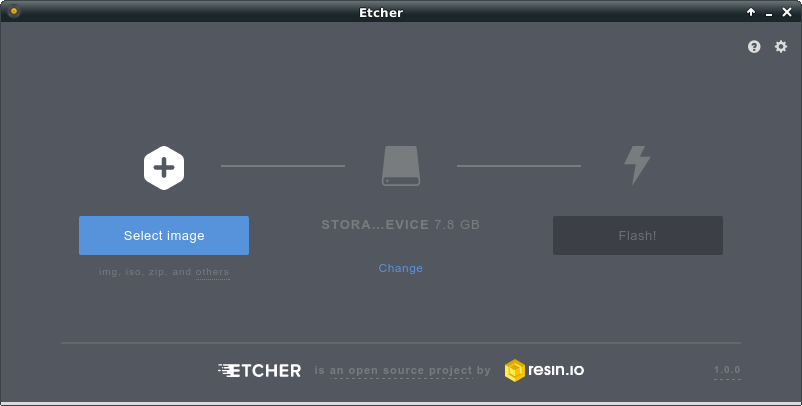

Install Cleep on SD card manually
label
You can install Cleep manually downloading image file directly from
Cleep website.
label
Once downloaded, use you favorite SD card burner application or use
Etcher
(Cross plaftorm software adviced by Raspberry Pi fundation).

label
Plug the SD card in your Raspberry Pi and connect it to power supply.
label
Wait few seconds and you should see a new device appear in the left "Devices" panel.
Install Cleep package on existing operating system
Cleep is running exclusively on Raspbian operating system.
label
Connect to your Raspberry Pi via SSH
label
Download Raspiot package from
Cleep website:
wget http://www.cleep.me/downloads/raspiot_X.X.X_armhf.deb
label
Install tools:
aptitude update; aptitude install ?
label
Install dependencies:
aptitude install ?
label
And install Cleep package:
dpkg -i raspiot_X.X.X_armhf.deb